Angular Formation
DAVIN Kevin

- Full-stack² Dev
- Agile Addict !
- Main committer on AngularJS's lib
- Angular, Java and other tech Trainer
Everyone will learn !
There are no stupid questions,
only stupid answers
 Slides
Slides
Errors, better way to do, idea ? Contribute !
Summary
- The past, present and future
- Angular as a platform
- Deep dive into Angular
- Testing for real !
Before 2003, the web was mostly...
Microsoft Internet Explorer 6
Major browser version of Microsoft during 5 years !
And something change everything...
in 2004 ?
Mozilla Firefox
Supports Javascript | W3C | Standard API
Google Chrome
Supports Javascript | W3C | Standard API
and wonderful tools for web developer
And lots of alternatives...
And some other(s) disappear

We have multiple browser...
... so we have to adapt our website for each of them
... or we can use libraries to abstract complexity !
Javascript based
Support all browser with only one syntax
Javascript based
Support all browser with only one syntax
ExtJS
Javascript based
User Interface Library
Others prefers...
Adobe Flash
ActionScript executed in a plugin
From 1996 to 2016
(more or less...)
Microsoft SilverLight
C#, .NET... executed in a plugin
From 2007 to 2011
Google GWT
JS generated from Java at compile-time !
Since 2006 and still here !
Since 2009, a lots of JS frameworks appear
Popularity of each
Learning from previous generation mistakes...
... new frameworks rise
Popularity of each
We have to built better, smarter and simpler application
We call it, Progressive-Web-App
Progressive
Responsive

Always up-to-date
syncInstallable
get_appOffline
Secured
httpsRe-engageable
notifications
Javascript is becoming the assembly language of the web


In Angular world, you can choose


This is why we call it Angular
Angular internally is written in
and this language is preferred (it simpler to use and learn)
Angular2 Dart
Separate team, separate implementation, separate versions

So, a little example of Angular App
Demo time is generally when something goes wrong...
What we just seen ?
@Component@NgModule- Use of Pipe and Directive in HTML
Did you see something else ?
Do you like books ?
We will build the web-site of a book store...
... which is specialized into digital books about Angular
To do that
We need to have good tools
NodeJS
AngularCLI
WebStorm
IntelliJ IDEA Ultimate
VSCode
a Good Terminal App
Essential command for Angular CLI
Create a project
$ ng new <NAME_OF_PROJECT> --prefix bs --style sass
Generate an element
$ ng generate component <NAME_OF_ELEMENT>
$ ng g c <NAME_OF_ELEMENT>
Can be used to generate directive, pipe, service, class, interface, enum and module
Serve your App
$ ng serve
Test your app
$ ng test
Open the Angular doc
$ ng doc <SEARCH_WORD>
See help about the CLI
$ ng --help
Angular
All is about Component
EVERYWHERE !
An app are just some buildings block
A component is:
- Logic in TypeScript
- Vue in HTML
- Style in SASS (or other)
Template
<div> My title is {{ title }} </div>
Property Bindings
We use standard HTML for property binding
<h3 [hidden]="isHidden" [class.active]="favoriteHero === hero" >
Your favorite hero is: {{ favoriteHero }}
</h3>
Structural Directive
All the directive inducing a dom modification outside of the current element are called Structural Directive
- ng-if
- ng-switch
- ng-repeat
The syntax is little bit special...
<p *ngIf="condition">
condition is true so this block is shown.
</p>
<tr *ngFor="let movie of movies">{{movie.name}}</tr>But Why ?
Using HTML Template Element
<template>
<div>A super template !</div>
</template>This template isn't rendered by the browser but can be used
The asterisk (*) effect
<p *ngIf="condition">
A super template !
</p>
<template [ngIf]="condition">
<p>
A super template !
</p>
</template>So, the * is just a syntaxic sugar
And we can write our own Structural Directive !
Local template variable
We can define a template variable associated to a dom element
<video #player src="foo.mp4"></video>
<button (click)="player.play()"></button>
Component Logic
The brain of the component...
Shell up a Component Declaration
import { Component } from 'angular2/core';
@Component({
selector: 'todo',
template: `<h1>{{ title }}</h1>`
})
export class TodoComp {
title : String = 'A super presentation !!';
}
Using a service in my component
import {Component} from 'angular2/core';
import {MyService} from './myservice';
@Component({
selector: 'todo',
template: `<h1>{{ title }}</h1>`
})
export class TodoComp {
title : String = 'A super presentation !!';
constructor(private myService: MyService){} // DI by constructor
}
Now, Components have an intuitive LifeCycle
- OnChange - input|output binding value changes
- OnInit - after the 1st OnChange
- DoCheck - dev's custom change detection
- AfterContentInit - after comp content initialized
- AfterContentChecked - after every check of comp content
- AfterViewInit - after comp's view(s) are initialized
- AfterViewChecked - after every check of a comp's view(s)
- OnDestroy - just before destruction
And we can use Interface to declare it
import { Component, OnInit } from 'angular2/core';
import { MyService } from './myservice';
@Component({
selector: 'todo',
template: `<h1>{{ title }}</h1> <emitter></emitter>`,
})
export class TodoComp implements OnInit {
title : String = 'A super presentation !!';
constructor(private myService: MyService){}
ngOnInit() {
console.log('The Component is initialised');
}
}
Communication
We have now a component, but we want to communicate with other element
Again, all is in component !
Input(s)
import {Component, Input} from 'angular2/core';
@Component({
selector: 'counter'
template: `...`
})
export class CounterCmp {
@Input() counterValue = 0;
}
<counter [counterValue]="10"></counter>Inputs(s) with Alias
import {Component, Input} from 'angular2/core';
@Component({
selector: 'counter'
template: `...`
})
export class CounterCmp {
@Input('start') counterValue = 0;
}
<counter [start]="10"></counter>Output(s) as Events !
import {Component, Input} from 'angular2/core';
@Component({
selector: 'counter'
template: `...`
})
export class CounterCmp {
@Input('start') counterValue = 0;
@Output() stateEmitter = new EventEmitter<State>();
}
<counter [start]="10" (stateEmitter)="show($event)"></counter>Output(s) with alias too (of course...)
import {Component, Input} from 'angular2/core';
@Component({
selector: 'counter'
template: `...`
})
export class CounterCmp {
@Input('start') counterValue = 0;
@Output('finish') stateEmitter = new EventEmitter<State>();
finish() {
this.stateEmitter.emit(myState);
}
}
<counter [start]="10" (finish)="show($event)"></counter>Bi-Directional communication
- [Input] as data-binding
- (Output) as event-binding
NgModel Directive
<input [(ngModel)]="foo.bar">
This syntax is a mix between property and event bindings
Styling components in Angular

Inline style
@Component({
selector: 'style-comp',
templateUrl: '<div class="my-comp">An encapsulated comp</div>',
styles: [`.my-comp { background: green; }`]
})
export class CssComp {}
Remote style
@Component({
selector: 'style-comp',
templateUrl: '<div class="my-comp">An encapsulated comp</div>',
styleUrls: ['./css.component.css']
})
export class CssComp {}
View Encapsulation mode
We can encapsulate everything
and we can do it by multiple way
Definition of style in Component
import {ViewEncapsulation} from 'angular2/core';
@Component({
selector: 'style-comp',
templateUrl: '<div class="my-comp">An encapsulated comp</div>',
styles: [`.my-comp { background: green; }`],
encapsulation: ViewEncapsulation.Emulated // Default behaviour
})
export class CssComp {}
Emulated
Which is the default encapsulation system
<head>
<style>.my-comp[_ngcontent-1] {background: green;}</style>
</head>
<style-comp _ngcontent-0 _nghost-1>
<div class="my-comp" _ngcontent-1>
An encapsulated comp
</div>
</style-comp>
Native
Which uses the Shadow-DOM
encapsulation: ViewEncapsulation.Native
<style-comp>
#shadow-root
| <style>
| .my-comp { background: green; }
| </style>
| <div class="my-comp">An encapsulated comp</div>
</style-comp>
None
Take care of Side effect !
encapsulation: ViewEncapsulation.None
<head>
<style>.my-comp {background: green;}</style>
</head>
<style-comp _nghost-1>
<div class="my-comp">
An encapsulated comp
</div>
</style-comp>
Angular @NgModule
The house of a feature, Unit of compilation
What is a feature ?
Functionality independent in access and logic, like
- Home Feature First page of the app
- Order Feature Only if you want to order
- Administration Feature Only for admin
Not only for feature, also for libs
The NgModule will be the entry-point of a lib in Angular
NgModule property
@NgModule({
declarations: [],
providers: [],
entryComponents: [],
bootstrap: [],
imports: [],
exports: [],
schemas:[]
})
export class AppModule { }
NgModule sample
@NgModule({
declarations: [
AppComponent, FlavorsComponent
],
imports: [
/* Main */ BrowserModule, FormsModule, HttpModule,
/* Routes */ AppRoutesModules,
/* Shared */ SharedModule,
/* Features */ OrderModule
],
providers: [],
bootstrap: [ AppComponent ]
})
export class AppModule { }
NgModule Declarations
@NgModule({
declarations: [ AppComponent, FlavorsComponent ]
})
export class DeclarationModule{}
Declare all element available in this module for Compilation
NgModule Providers
@NgModule({
providers: [ FooService ]
})
export class ProviderModule{}
It allows to define the list of element available for Dependency Injection (DI)
NgModule EntryComponents
@NgModule({
entryComponents: [ AppComponent ]
})
export class EntryComponentsModule{}
Specifies a list of components that should be compiled when this module is defined
NgModule Bootstrap
@NgModule({
bootstrap: [ AppComponent ]
})
export class BootstrapModule{}
Defines the components that should be bootstrapped when this module is bootstrapped
They will be added automatically to EntryComponents
NgModule Imports & Exports
@NgModule({
exports: [ ASpecialComponent ]
declarations: [ AnoTSoSpecialComponent ]
})
export class ExportsModule{}
@NgModule({
imports: [ ExportsModule ]
})
export class ImportsModule{}
Allow to import all exported element from another NgModule
NgModule Schemas
@NgModule({
schemas: [ NO_ERRORS_SCHEMA ]
})
export class BootstrapModule{}
Allow to configure the behavior of the Angular Compiler (SchemaMetadata)
NO_ERRORS_SCHEMA: totally laxCUSTOM_ELEMENTS_SCHEMA: only custom elements
Important module for your App
CommonModule
@NgModule({
declarations: [COMMON_DIRECTIVES, COMMON_PIPES],
exports: [COMMON_DIRECTIVES, COMMON_PIPES],
providers: [
{provide: NgLocalization, useClass: NgLocaleLocalization},
],
})
class CommonModule {}
The module that includes all the basic Angular directives like NgIf, NgFor, ...
BrowserModule
@NgModule({
providers: [
BROWSER_SANITIZATION_PROVIDERS, {provide: ErrorHandler, useFactory: errorHandler, deps: []},
{provide: DOCUMENT, useFactory: _document, deps: []},
{provide: EVENT_MANAGER_PLUGINS, useClass: DomEventsPlugin, multi: true},
{provide: EVENT_MANAGER_PLUGINS, useClass: KeyEventsPlugin, multi: true},
{provide: EVENT_MANAGER_PLUGINS, useClass: HammerGesturesPlugin, multi: true},
{provide: HAMMER_GESTURE_CONFIG, useClass: HammerGestureConfig},
{provide: DomRootRenderer, useClass: DomRootRenderer_},
{provide: RootRenderer, useExisting: DomRootRenderer},
{provide: SharedStylesHost, useExisting: DomSharedStylesHost},
{provide: AnimationDriver, useFactory: _resolveDefaultAnimationDriver}, DomSharedStylesHost,
Testability, EventManager, ELEMENT_PROBE_PROVIDERS, Title
],
exports: [CommonModule, ApplicationModule]
})
class BrowserModule {}
The ng module for the browser which exports CommonModule
FormsModule
@NgModule({
declarations: TEMPLATE_DRIVEN_DIRECTIVES,
providers: [RadioControlRegistry],
exports: [InternalFormsSharedModule, TEMPLATE_DRIVEN_DIRECTIVES]
})
class FormsModule {}
All element needed for form declaration in HTML
ReactiveFormsModule
@NgModule({
declarations: [REACTIVE_DRIVEN_DIRECTIVES],
providers: [FormBuilder, RadioControlRegistry],
exports: [InternalFormsSharedModule, REACTIVE_DRIVEN_DIRECTIVES]
})
class ReactiveFormsModule {}
All element needed for form declaration in code-style
Including the business logic in service
And use DI everywhere !
Create an injectable service
@Injectable
export class MyService {}
Register it in providers
import {MyService} from './my.service.ts';
...
providers : [ MyService ]
Inject it !
import {Component} from 'angular2/core';
import {MyService} from './my.service.ts';
@Component({...})
export class TodoComp {
constructor(private myService: MyService){}
}
We can declare a provider with multiple syntax
providers : [
MyService // TypeProvider
{ provide: 'withValue', useValue: 'Foo !' } // ValueProvider
{ provide: 'withClass', useClass: MyService } // ClassProvider
{ provide: 'aliasing', useExisting: MyService } // ExistingProvider
{ provide: 'withFactory',
useFactory: (l: string) => l.split(' ')[0],
deps: ['withValue']
} // FactoryProvider
]
Inject it with InjectionToken
import {Component, Inject} from 'angular2/core';
import {MyService} from './my.service.ts';
@Component({...})
export class TodoComp {
constructor(@Inject('withClass') private myService: MyService){}
}
Angular is a platform
Like every platform, it should have solid basis
Angular has 3 elements as basis
Zone.js
Zones are simply an Execution context for Javascript
[Available outside Angular for any JS app]
[Proposed as official spec for Javascript]
Injection JS
Dependency Injection system
[Available outside Angular for any JS app]
Observables with RxJS 5.x
Lazy event stream
[Available outside Angular for any JS app]
Zones.js
Zones are simply an Execution context for Javascript
Zones.js
Zones are simply an Execution context for Javascript
It helps to handle asynchronous code in JS
Extract from Dart Lang, alternative to Domains in NodeJS
Javascript 101
let cf = (name) => () => console.log(name);
var a = cf('a'), b = cf('b'), c = cf('c'), d = cf('d');
a();
setTimeout(b, 0);
setTimeout(c, 0);
d();
Results to
a
d
b
c
All the async tasks are added to the event queue and executed when other tasks are finished
How long does it take ?
start();
a();
setTimeout(b, 0);
setTimeout(c, 0);
d();
stop();
Results :
// Start
a
d
// Stop
b // Missed
c // Missed
What need to be done ?
What need to be done ?
Observables
Definition
“Observables are lazy event streams which can emit zero or more events, and may or may not finish.”
RxJS v5
Simple !
An Observable is a structure highly functional
foo.bar$ // An Observable
.filter(v => v.length > 0)
.map(v => removeSpaces(v))
.map(v => v.toUpperCase())
.subscribe(
v => $scope.result = v /* An Observer */
);
And we have a lot of operators !
- ajax
- bindCallback
- bindNodeCallback
- create
- defer
- empty
- from
- fromEvent
- fromEventPattern
- fromPromise
- generate
- interval
- never
- of
- repeat
- repeatWhen
- range
- throw
- timer
- buffer
- bufferCount
- bufferTime
- bufferToggle
- bufferWhen
- concatMap
- concatMapTo
- exhaustMap
- expand
- groupBy
- map
- mapTo
- mergeMap
- mergeMapTo
- mergeScan
- pairwise
- partition
- pluck
- scan
- switchMap
- switchMapTo
- window
- windowCount
- windowTime
- windowToggle
- windowWhen
- debounce
- debounceTime
- distinct
- distinctKey
- distinctUntilChanged
- distinctUntilKeyChanged
- elementAt
- filter
- first
- ignoreElements
- audit
- auditTime
- last
- sample
- sampleTime
- single
- skip
- skipUntil
- skipWhile
- take
- takeLast
- takeUntil
- takeWhile
- throttle
- throttleTime
Any documentation ?
Yes, and it's very fun !

Good to know...
Observable are immutable, composable and reusable
let obs$ = Observable.from(1, 2, 3, 4, 5);
obs$.subscribe(x => console.log(x)); // 1, 2, 3, 4, 5
let evenObs$ = obs$.filter(x => x % 2 == 0 ));
evenObs$.subscribe(x => console.log(x)) // 2, 4
evenObs$.map(x => x*2).subscribe(x => console.log(x)) // 4, 8
Hierarchical Injector
The injector of Angular is inspirited by Dagger

Scope of an Injector
@NgModule
Each element in provider of @NgModule will be a singleton available in all loaded element
@Component
A component has it's own provider which allow to have singleton between the current element and its children
Async @NgModule
An async @NgModule always have its own injector with every elements of providers as new singleton !
The Router
of course, it's a module !
import { RouterModule } from '@angular/router';
But we need to register it with a parameter...
Defining Route(s)
const routes: Routes = [
{ path: 'foo', component: FooComp },
{ path: 'others', component: OthersComp,
data: { title: 'Others List' } },
{ path: '', redirectTo: '/foo', pathMatch: 'full' },
{ path: '**', component: PageNotFoundComponent }
];
Registering the routes
@NgModule({
imports: [
RouterModule.forRoot(appRoutes)
...
],
...
})
export class RouteModule {}
Router outlet
<header> ... </header>
<main>
<router-outlet></router-outlet>
</main>
<footer> ... </footer>
Child route
We can now create multi level routes and share page context
const routes: Routes = [
{ path: 'users', component: UsersComp
children : [
{ path: '', component: UsersListComp },
{ path: ':id', component: UsersDetailComp },
]
},
];
Multi level with multi router-outlet
<!-- UsersComp Template -->
<user-module-header></user-module-header>
<router-outlet></router-outlet>
<user-module-footer></user-module-footer>
<!-- UsersListComp Template -->
<ul>
<li></li>
<li></li>
</ul>
Multi level with multi router-outlet
<header> ... </header>
<main>
<router-outlet>
<user-module-header></user-module-header>
<router-outlet>
<ul>
<li></li>
<li></li>
</ul>
</router-outlet>
<user-module-footer></user-module-footer>
</router-outlet>
</main>
<footer> ... </footer>
Create a link to specific route
In HTML, like a simple <a>
<a routerLink="/users">Users</a>
<a [routerLink]="['/users']">Users</a>
<a [routerLink]="['/users', 1]">User #1</a>
<a [routerLink]="['/users', 1, 'stats']">User #1 stats</a>
<a [routerLink]="['/users', 1, {foo:'bar'}]">User #1 with params</a>
Navigate from code
We can use the component logic in typscript to navigate
constructor(private router: Router) {}
redirectTo(user: User) {
this.router.navigate(['/users', user.id]);
}
Route parameters in Component
We can access the current route by DI in our component
constructor(private route: ActivatedRoute) {}
ngOnInit(): void {
this.route.data
.map(d => <any>d.flavors)
.subscribe(f => this.flavors = f);
}
ActivatedRoute
- url: the route path(s)
- data: the object provided for the route (std and guard)
- params: the required and optional parameters
- queryParams: the query parameters available to all routes.
- fragment: the URL fragment available to all routes.
- outlet: The name of the RouterOutlet
- routeConfig: The route configuration
- parent: the parent
ActivatedRoute - firstChild: contains the first
ActivatedRoute - children: contains all the child routes activated under the current route.
Those data are available for every component currently loaded
From the first router-outlet to the last component leaf
ActivatedRoute
Use Observable to handle modification
interface ActivatedRoute {
url : Observable<UrlSegment[]>
params : Observable<Params>
queryParams : Observable<Params>
fragment : Observable<string>
data : Observable<Data>
paramMap : Observable<ParamMap>
queryParamMap : Observable<ParamMap>
...
}
So, moving to another URL with the same component doesn't trigger a destroy & construct...
... it just pushes a new value into the Observable
Guard
Allow access control over specific route
const routes: Routes = [
path: 'users',
canLoad: [CanLoadUsers],
component: UsersListComp
];
Defining a Guard
@Injectable()
class CanLoadUsers implements CanLoad {
constructor(private permissions: Permissions, private currentUser: User) {}
canLoad(route: Route): boolean {
if (route.path === "contacts") {
return this.permissions.canLoadUsers(this.currentUser);
} else {
return false;
}
}
}
Synchronous or Asynchronous Guard
The CanLoad method can return different value
interface CanLoad {
canLoad(route: Route): Observable<boolean>|Promise<boolean>|boolean
}
Resolver
Allow to fetch data before the component init itself
@Injectable()
export class FooResolver implements Resolve<Foo> {
constructor(private fooService: FooService) { }
resolve(route: ActivatedRouteSnapshot, state: RouterStateSnapshot): Observable<Foo> {
return this.fooService.findOne(+route.params.id);
}
}
Resolver
We define a resolver for a specific route
export const routes: Routes = [
{
path : 'foo', component: FooComponent,
resolve: {
foos: FooResolver
}
}
];
Resolver
And we can access its value like this
@Component({ ... })
export class FooComponent implements OnInit {
foos: Array<Foo>
constructor(private route: ActivatedRoute) {}
ngOnInit(): void {
this.route.data
.map(d => d.foos)
.subscribe(f => this.foos = f);
}
}
Http Communication
Http Service
To communicate with 'outside' world, we only have the Http service
So, no WebSocket nor Server-Sent Event for now...
Http Service
This element should be imported from this own module HttpModule
import {HttpModule} from '@angular/http';
@NgModule({
declarations: [...],
imports: [ HttpModule ],
providers: [...]
})
export class FeatureModule { }
And simply use DI to get the service
import {Http} from '@angular/http';
@Injectable()
export class BookService {
constructor(private http: Http) { }
}
Http has everything we need to make Http Request
class Http {
constructor(_backend: ConnectionBackend, _defaultOptions: RequestOptions)
request(url: string|Request, options?: RequestOptionsArgs) : Observable<Response>
get(url: string, options?: RequestOptionsArgs) : Observable<Response>
post(url: string, body: any, options?: RequestOptionsArgs) : Observable<Response>
put(url: string, body: any, options?: RequestOptionsArgs) : Observable<Response>
delete(url: string, options?: RequestOptionsArgs) : Observable<Response>
patch(url: string, body: any, options?: RequestOptionsArgs) : Observable<Response>
head(url: string, options?: RequestOptionsArgs) : Observable<Response>
options(url: string, options?: RequestOptionsArgs) : Observable<Response>
}
Example of GET request in a Service
import {Http} from '@angular/http';
import 'rxjs/add/operator/map'
@Injectable()
class FooService {
constructor(private http: Http) {}
findOne(): Observable<Foo> {
return this.http.get('/a/fake/url/which/returns/foo/in/json')
.map(res => res.json())
}
}
Get result of Http Request from a service
import {FooService} from './foo.service.ts';
@Component({...})
class FooComponent implements OnInit {
foo: Foo;
constructor(private fooService: FooService) {}
ngOnInit() {
this.fooService.findAll()
.subscribe(f => this.foo = f);
}
}
Everything is testable in Angular
Thanks to DI, Zones and amazing testing framework
Karma | Jasmine
Anatomy of a test
describe("What I globally test", () => {
it("should do something", () => {
const value = 12;
expect(value).toEqual(12);
});
it("should do something else", () => {
expect(2**4).toEqual(16);
});
});
beforeEach | afterEach
describe("What I globally test", () => {
let testValue: number;
beforeEach(() => {
testValue = generateNumber();
});
it("should do something..", () => { .. });
afterEach(() => { .. });
});
beforeAll | afterAll
describe("What I globally test", () => {
beforeAll(() => { .. });
it("should do something..", () => { .. });
afterAll(() => { .. });
});
Nested describe
describe("What I globally test", () => {
beforeEach(() => { .. });
describe("sub scrope test", () => {
beforeEach(() => { .. });
it("should do one thing", () => { .. });
it("should do another thing", () => { .. });
});
describe("another sub scrope test", () => {
beforeEach(() => { .. });
it("should do different thing", () => { .. });
it("should do an original thing", () => { .. });
});
});expect-ation
it("should check the equality", () => {
expect(6*2).toEqual(12); //True
});
expect and matchers
it("should check the equality", () => {
expect({foo: 'bar'}).toEqual({foo: 'bar'}); // True
});
it("should do a check equality", () => {
expect({foo: 'bar'}).toBe({foo: 'bar'}); // False
});
A lot of matchers
it("...", () => {
expect(true).toBeTruthy();
expect(false).toBeFalsy();
expect(windows).toBeDefined();
expect(null).toBeNull();
expect(pi).toBeCloseTo(3.1, 2);
expect(['foo', 'bar']).toContain('foo');
expect('01-02-03-04-05').toMatch(/\d{2}-\d{2}-\d{2}-\d{2}-\d{2}/);
expect(6).toBeGreaterThan(5);
expect(5).toBeLessThan(6);
expect(aFunctionWhichThrow).toThrow(new Error("Unexpected error!"));
});
And a simple negation
it("...", () => {
expect('336$').not.toMatch(/\d{3}â¬/);
});
Mock
let worldSimplertMock = { findOne: () => { .. } };
let jasmineMock = jasmine.createSpyObj('name',['findOne','reset']);
And some specific expectation
let jasmineMock = jasmine.createSpyObj('name',['findOne','reset']);
...
expect(jasmineMock.findOne).toHaveBeenCalled();
expect(jasmineMock.findOne).toHaveBeenCalledWith(12);
Configuration of test for Angular Component
DI in testing
@NgModule({
declarations: [ ComponentToTest ]
providers: [ MyService ]
})
class AppModule { }TestBed.configureTestingModule({
declarations: [ ComponentToTest ],
providers: [ MyService ]
}); // Get instance during a BeforeEach call
let service = TestBed.get(MyService); Injection can be directly done in test
TestBed.configureTestingModule({
declarations: [ ComponentToTest ],
providers: [ MyService ]
});
it('should return ...', inject([MyService], service => {
service.foo();
}));
Full code example
describe('Service: LanguagesService', () => {
beforeEach(() => TestBed.configureTestingModule({
providers: [ LanguagesService ]
}));
it('should return languages', inject([LanguagesService], svc => {
expect(svc.get()).toContain('en');
}));
})
Accessing Component in test env
let fixture: ComponentFixture<AppComponent> // Full component
let component: AppComponent; // Pure Component instance
let el: DebugElement; // DOM element with helper method
beforeEach(() => {
TestBed.configureTestingModule({
declarations: [AppComponent]
}).compileComponents()
});
beforeEach(() => {
fixture = TestBed.createComponent(AppComponent);
component = fixture.componentInstance;
el = fixture.debugElement;
}); The Fixture...
abstract class ComponentFixture {
debugElement; // test helper
componentInstance; // to access properties and methods
nativeElement; // to access raw DOM element
debugElement; // to access DOM element with helper
detectChanges(); // trigger component change detection
autoDetectChanges(); // change the behavior of the
// component change detection
whenStable(): Promise // return a resolved promise
// when all changes are done
}
The DebugElement...
class DebugElement extends DebugNode {
properties : {[key: string]: any}
attributes : {[key: string]: string}
query(predicate: Predicate<DebugElement>) : DebugElement
queryAll(predicate: Predicate<DebugElement>) : DebugElement[]
triggerEventHandler(eventName: string, eventObj: any)
}
Handling time and asynchronous task
async()
it('should render `Hello World!`', async(() => {
greeter.name = 'World';
//trigger change detection
fixture.detectChanges();
fixture.whenStable().then(() => {
// Allow to wait this resolution
expect(element.querySelector('h1').innerText)
.toBe('Hello World!');
expect(de.query(By.css('h1')).nativeElement.innerText)
.toBe('Hello World!');
});
}));
fakeAsync()
@Component({..})
export class WelcomeComponent implements OnInit {
greetings: string;
ngOnInit() {
setTimeout(() => this.greetings = 'Hello there!', 3000);
}
}
fakeAsync()
it('should have a greeting message', fakeAsync(() => {
fixture.detectChanges();
tick(3000);
fixture.detectChanges();
expect(element.querySelector('p').textContent)
.toBe('Hello there!');
}));
flush() (since 4.2)
it('should have a greeting message', fakeAsync(() => {
fixture.detectChanges();
flush();
fixture.detectChanges();
expect(element.querySelector('p').textContent;)
.toBe('Hello there!');
}));